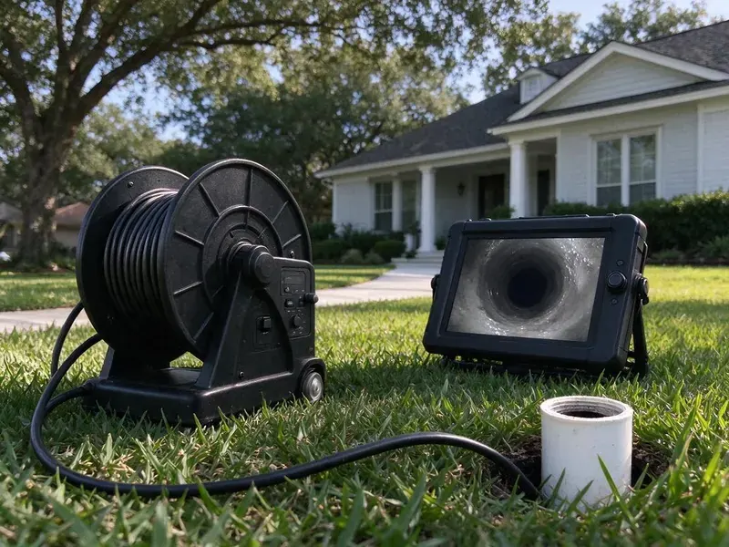

Sewer Line Replacement in Georgetown, KY
Facing severe sewer line issues in Georgetown, KY? BFK Plumbing provides dependable sewer line replacement services to restore your home's drainage.
- Permits and Inspections Handled
- Fast Service
- Trenchless Options Available
- Lifetime Workmanship Warranty

Replace Your Failing Sewer Line Once and Do It Right in Georgetown, KY.
We handle digging or trenchless work, permits, inspection and site restoration.
Your Go-To for Sewer Line Replacement in Georgetown, KY
When your sewer line is beyond repair, BFK Plumbing provides prompt and reliable sewer line replacement for Georgetown, KY residents. We handle everything from the first inspection to final pipe installation. Your new sewer system will meet all local codes and function properly for years to come.
Our expertise includes:
- Trenchless & Traditional Replacement
- Main Sewer Line Re-Piping and Upgrades
- Code Compliant Installations

Additional Drain Services Services in Georgetown, KY
From stubborn kitchen clogs to main sewer backups, our drain services in Georgetown, KY clear the line and keep it clear with camera-verified results.


Customers
Why Choose BFK Plumbing for Sewer Line Replacement in Georgetown, KY?
Choosing the right contractor for sewer line replacement is crucial for the life of your plumbing system. We make sure all work meets local Georgetown, KY building codes and standards.
- Licensed & Insured, Our plumbers are fully licensed, insured, and trained to handle demanding sewer line projects safely.
- Site Restoration, We backfill, compact and restore the work area as part of the project.
- Options Explained, We compare trenchless and open-trench methods side by side for your property.
Citywide Coverage
From older homes near the core of Georgetown to newer subdivisions with early failures, we bring the right equipment to each property. We also coordinate with HOAs on access and cleanup.
Experienced Team
When our technicians arrive at your Georgetown, KY home, you can trust their expertise. They approach every sewer line replacement with professionalism, precision, and a commitment to quality work.
Safety-First Approach
Safety is our top priority on every sewer line replacement project. We follow strict safety protocols to protect your property, our team, and the environment.
Trusted Certified Georgetown Plumbing Services Professionals
At BFK Plumbing, we take pride in providing certified plumbing services throughout Georgetown, KY. Backed by recognized industry credentials, our experienced plumbers combine technical skill with genuine customer care. Whether it is repair, installation, or maintenance, we follow strict safety and quality standards to deliver long-lasting results you can trust.
Call Us Now PHCC Plumbing Contractor Recognition
PHCC Plumbing Contractor Recognition Better Business Bureau (BBB) Accreditation
Better Business Bureau (BBB) Accreditation Angi Certified Pro
Angi Certified Pro ISO 9001 Quality Management Certification
ISO 9001 Quality Management CertificationDependable Sewer Line Replacement Services in Georgetown, KY
Permits and Code Compliance in Georgetown, KY
Sewer line replacement is a significant project that requires following local plumbing codes and often needs permits from Georgetown authorities. BFK Plumbing handles permit applications and makes sure every replacement job meets or exceeds municipal and state regulations in Kentucky. Kentucky has its own statewide plumbing code, and plumbing work is reviewed and inspected under state oversight. This includes proper pipe sizing, depth, slope, and connection to the main sewer. Skipping permits or code requirements can lead to fines and rework, so we handle it professionally.

Cast Iron Sewer Replacement in Georgetown
Cast iron drains in older homes corrode from the inside, especially along the bottom of the pipe. Over time this leaves cracks, holes and a rough surface that snags waste. Replacing the cast iron sewer outside the home is often the first step. We can also evaluate under-slab cast iron and discuss lining or rerouting options. New PVC or HDPE will not rust or scale the same way.
Sewer Line Replacement Cost Assessment in Georgetown
The cost of sewer line replacement varies significantly based on the method used (trenchless or traditional), the length and depth of the pipe, the type of material, and site access. Before any work begins, BFK Plumbing provides a detailed and transparent cost assessment. We explain all potential expenses, including labor, materials, equipment, and permit fees in Georgetown. Our goal is a cost-effective solution that does not cut corners on quality or long-term reliability.
Emergency Sewer Line Replacement in Georgetown, KY
Sewer line emergencies need immediate attention. A complete sewer line collapse or severe blockage can cause raw sewage to back up into your property. BFK Plumbing offers emergency sewer line replacement across Georgetown, KY, responding promptly to limit damage and restore your system. Our emergency team is equipped to handle urgent situations with the right tools and expertise, 24/7.
Partial Sewer Line Repair in Georgetown, KY
Not every damaged sewer needs full replacement. If the camera shows a single break or one root-damaged joint, a spot repair may fix the problem. We locate the exact spot and depth, excavate a small area and replace that section. This costs far less than replacing the whole lateral. We only recommend it when the rest of the line is in sound condition.
Trenchless Sewer Line Repair and Replacement in Georgetown, KY
Trenchless technology, such as pipe bursting or pipe lining, offers a less invasive alternative to traditional methods. Pipe bursting pulls a new pipe through the old one, fracturing the old pipe in place. Pipe lining installs a new, durable resin liner inside the existing pipe. Both methods significantly reduce the need for excavation, preserving your yard and landscaping in Georgetown, KY while providing a long-lasting solution.
Permitting and Code Compliance in Georgetown, KY
Sewer line replacement projects in Georgetown, KY often require permits and must meet local plumbing codes. BFK Plumbing handles the permitting process and makes sure every part of the replacement meets or exceeds municipal standards. Our knowledge of local regulations means your new sewer line is installed correctly and safely. That helps you avoid possible fines or future issues.

Sewer Line Inspection and Diagnostics in Georgetown
Before any replacement, a thorough video inspection is essential. We use high-resolution cameras to travel through your sewer lines, identifying the exact location and nature of the problem, whether it is cracks, root intrusion, or collapsed sections. This accuracy lets us recommend the most appropriate and cost-effective replacement plan. That way we address the real cause of your sewer issues in Georgetown.
Sewer Line Replacement Near Me in Georgetown, KY
Our local teams are located to provide quick, efficient sewer line replacement throughout Georgetown and surrounding areas. We pride ourselves on being the go-to local choice for reliable plumbing solutions.
When you need a reliable plumber for sewer line replacement near your home or business in Georgetown, KY, BFK Plumbing is the trusted choice. We focus on delivering prompt, professional service with lasting solutions for our neighbors.
BFK Plumbing at a Glance
- Licensed and insured plumbers serving Georgetown, KY
- Same-day appointments and 24/7 emergency response
- Upfront, flat-rate pricing before work begins
- 4.8-star rated by 309+ Kentucky customers
Georgetown Map
Georgetown Information
- Population
- 39,462
- Area codes
- Local
- Service area
- Georgetown and communities within 40 miles
- Nearby
- Lexington, Frankfort, Nicholasville, Richmond
Aging clay, cast iron and Orangeburg laterals make professional sewer line replacement a sound long-term investment for homes in Georgetown, KY.
Expert Services
Trust our professionals for reliable BFK Plumbing solutions in Georgetown, KY.
Our Specialized Plumbing Services in Georgetown, KY
At BFK Plumbing, we provide a complete range of plumbing services across Georgetown, KY. From leak detection to full system installations, our team ensures fast, precise, and affordable service for both residential and commercial properties. Explore our core services below:


How Our Sewer Pipe Replacement Process Works in Georgetown, KY
From the first inspection to final restoration, we manage every step of your sewer line replacement in Georgetown for a smooth experience.
Request a Quote
Call (502) 300-9896 or fill out our online form to schedule an initial consultation. We'll discuss your concerns and set up a convenient time for an on-site visit.
Diagnosis & Plan
Our technicians use camera inspections to accurately diagnose the sewer line issue. We then develop a detailed replacement plan, explaining the best method and materials for your specific situation.
Permits & Prep
We handle all necessary permits with Georgetown authorities before any work begins. Our team prepares the site, keeping safety in mind and minimizing disruption to your property.
Frequently Asked Questions About Sewer Line Replacement in Georgetown
The cost of sewer line replacement in Georgetown, KY can vary widely, typically ranging from $4,000 to $25,000 or more. Factors like the length of the line, depth, replacement method (trenchless or traditional), and material type (PVC, HDPE) all influence the final price. We provide a detailed, upfront estimate after a thorough inspection.
We primarily use high-quality PVC (polyvinyl chloride) or HDPE (high-density polyethylene) pipe for sewer line replacements. These materials are durable, corrosion-resistant, flexible, and long-lived, making them ideal for the soil conditions in Kentucky.
Sewer line replacement is a complex job that requires specialized equipment, permits, and expertise in excavation, pipe fitting, and local plumbing codes. It is not a suitable DIY project and should always be handled by licensed, experienced professionals for safety and compliance.
Yes, sewer line replacement is a major plumbing project that typically requires a permit from Georgetown's building or public works department. BFK Plumbing handles all necessary permit applications and makes sure all work complies with local and state plumbing codes in Kentucky for a legal, safe installation.
The timeline depends on the complexity and method. A trenchless replacement might take 1 to 3 days, while a traditional trenched replacement could take 3 to 5 days, sometimes longer for extensive projects. We will give you a clear timeline estimate during your consultation.
Yes, sewer line replacement normally requires a permit and inspection. We handle the paperwork and schedule the inspection for you.
With trenchless methods, typically only two small pits are dug. Open-trench work disturbs more, but we backfill and restore the area when finished.
Around Georgetown, quick temperature swings in late winter can crack exposed pipes and loosen joints in older plumbing. Crawlspaces and basements are both common in Kentucky, and crawlspace homes make most plumbing repairs easier to reach. Tree roots are a common cause of sewer line damage as they seek out moisture and nutrients, getting into cracks and joints. Soil that shrinks, swells or settles can also put stress on older, rigid pipes and lead to cracks or collapses over the years.
What People Are Saying About Our Plumbing Experts?

Laura S.
I scheduled a water heater replacement, and the team made the process smooth and affordable. The new unit works perfectly, and they cleaned up after completing the job.
Water Heater Replacement · Nicholasville, KYSofia M.
Two new toilets installed in one visit, no mess left behind, and the tech even adjusted a faucet he noticed was dripping. Fair pricing and really friendly.
Toilet Installation · Independence, KY
Patricia H.
We had a slab leak that two other companies could not find. BFK Plumbing located it in under an hour, explained our options, and the price matched the quote to the dollar.
Slab Leak Repair · Georgetown, KY
Robert G.
The trenchless sewer replacement saved our front yard. They walked us through the camera inspection footage first so we knew exactly what we were paying for.
Sewer Line Replacement · Richmond, KY
Daniel K.
A pipe burst at 11 pm and they actually answered. The plumber showed up within the hour, shut everything down, and had us back to normal the next morning. Could not ask for more.
Emergency Plumbing · Florence, KY
Emily R.
I called BFK Plumbing for plumbing repair, and the technician was fast, polite, and thorough. They explained the problem clearly and fixed it the same day. I will definitely hire them again. Highly recommended!
Plumbing Repair · Nicholasville, KY